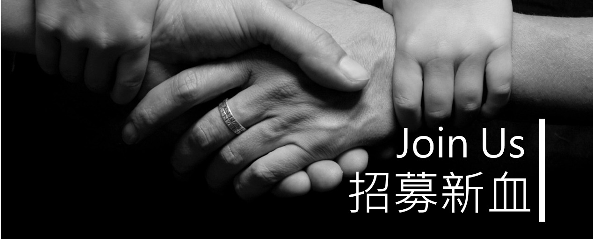

招募資訊
各位學弟妹大家好，資訊工程系學會隨時歡迎有興趣、有熱誠的新血加入，不論你是大一菜鳥或大四老鳥，只要願意燃燒自己，都歡迎加入我們的大家族，以下為幾點注意事項：
1. 加入系會後，每周的例會時間是權利也是義務，若有事請務必請假。
2. 籌備活動時，請尊重幹部們的決議。
3. 加入系會後，希望你們能積極主動的參與活動工人，不要掛著工人名義卻不做事。
4. 年度大選時，請保持尊重友善的精神，無論支持候選人有無選上，大家都是資工系學會的一份子。
QA時間
相信大家會有些疑問，以下為常見Q&A，若仍有疑問可發信或留言到系會信箱，我們會盡快回復你唷。
常見Q&A：
Q：加入系學會能夠幫助我學到甚麼嗎？
A：可以培養團體的合作、溝通、組織、領導的能力。
Q：剛加入可以選會長嗎？
A：不能唷，根據規定會長參選條件為至少加入系會一年以上者。
Q：加入系學會會影響到功課嗎？
A：系會每到考前有專屬的讀書週提供教室與飲料溫書，此外還有學長會幫忙開課教授歐趴考試密技，讓你在玩活動的同時學業也能兼顧。
有興趣者，請下載報名表單印出並填妥後，交到系學會辦公室。